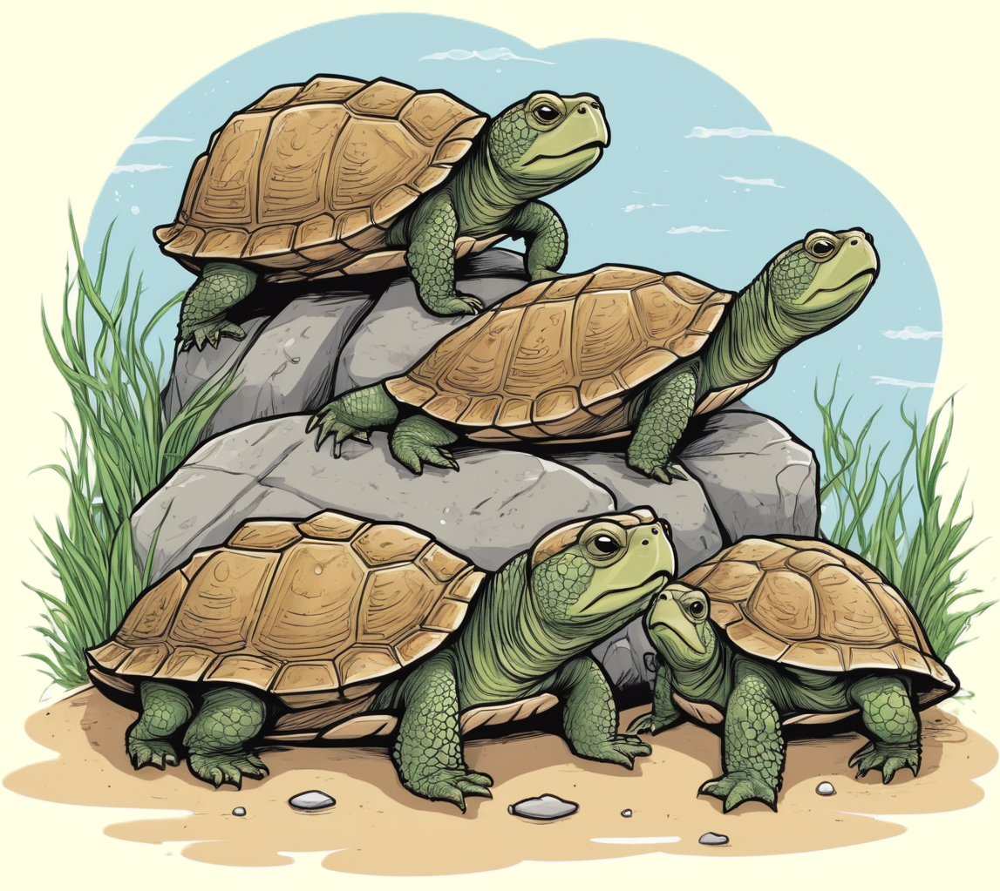

Die Schnappschildkröte, ein faszinierendes Reptil, beeindruckt mit ihrem kraftvollen Kiefer und ihrem gepanzerten Rückenpanzer.
Erkunde die aufregende Welt dieser Schildkrötenart und erfahre, wie sie in Gewässern und Ufern von Flüssen lebt.

Geschickte Jäger unter Wasser
Schnappschildkröten, auch als Alligator-Schildkröten bekannt, sind faszinierende Reptilien, die in den Gewässern Nordamerikas beheimatet sind. Mit ihrem kuppelförmigen Rückenpanzer, der von dunklen Mustern geprägt ist, und ihrem breiten Maul, das an das einer Schnappschildkröte erinnert, sind sie leicht zu erkennen. Diese Schildkröten sind geschickte Jäger und leben in langsam fließenden Gewässern wie Teichen, Seen und Sümpfen. Ihr ausgezeichnetes Tarnmuster hilft ihnen dabei, sich in ihrem natürlichen Lebensraum zu verbergen, während sie geduldig auf ihre Beute warten.
Schnappschildkröten sind Allesfresser und ernähren sich von Fischen, Fröschen, Insekten, kleinen Säugetieren und sogar Aas. Sie lauern oft regungslos im Wasser, nur mit den Augen und den Nasenlöchern an der Wasseroberfläche, und schnappen blitzschnell zu, um ihre Beute zu fangen. Ihre kräftigen Kiefer und scharfen Zähne ermöglichen es ihnen, auch größere Beutetiere zu bewältigen. Schnappschildkröten sind anpassungsfähige Reptilien, die eine wichtige Rolle im aquatischen Ökosystem spielen und durch ihre Jagdtechniken faszinieren.
Ruhe und Fortpflanzung im Wasserreich
Schnappschildkröten zeigen interessante Verhaltensweisen während der Fortpflanzungszeit. Die Weibchen suchen im Frühling oder Frühsommer nach geeigneten Stellen, um ihre Eier abzulegen. Nach der Eiablage vergraben sie die Eier im Sand, wo sie sich über mehrere Monate entwickeln, bevor die Jungtiere schlüpfen. Die kleinen Schildkröten brechen dann aus ihren Eierschalen aus und machen sich auf den Weg zum Wasser. Die ersten Jahre ihres Lebens verbringen sie oft im flachen Wasser, bevor sie später in tiefere Gewässer umsiedeln.
Schnappschildkröten sind eher Einzelgänger und verteidigen ihr Territorium gegenüber Artgenossen. Ihr langes Leben und ihre Anpassungsfähigkeit an unterschiedliche Wasserlebensräume machen sie zu faszinierenden Bewohnern der nordamerikanischen Gewässer. Die Schnappschildkröten sind aufgrund ihrer besonderen Erscheinung und ihrer wichtigen Rolle im ökologischen Gefüge der Gewässer eine interessante Spezies, die die Neugier von Naturforschern weckt.